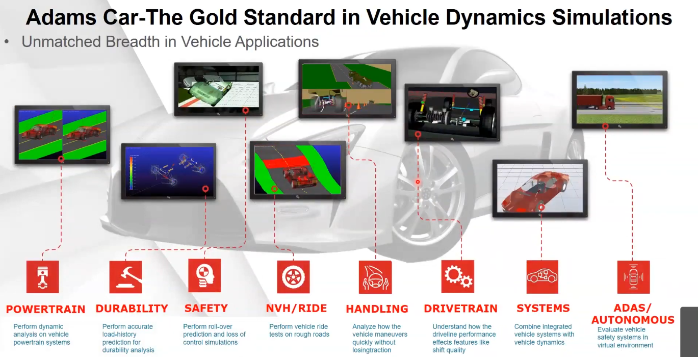

multibody #simulation
History
https://www.linkedin.com/pulse/remembering-nicolae-orlandea-1937-2023-original-adams-john-janevic
The Adams multibody dynamics software has led the industry since it was conceived and commercialized in the 1970s. The software has its origins in the brilliant PhD thesis, “Node-Analogous, Sparsity-Oriented Methods for Simulation of Mechanical Dynamic Systems”, written at the University of Michigan in 1973 by Dr. Nicolae Orlandea. Using Orlandea’s thesis as a foundation, three University of Michigan pioneering software entrepreneurs (Dr. Milt Chace, Mike Korybalski, and John Angell) founded Mechanical Dynamics, Inc. in 1976. Though originally a mechanical engineer with a knack for software, Korybalski assumed the role of CEO of Mechanical Dynamics. Angell was the CTO. Orlandea split his time between his academic posts, industrial jobs, and Mechanical Dynamics (and later MSC Software), and was the original architect of Adams.
Orlandea used state-of-the-art techniques such as stiff integration schemes and sparse matrix methods to make the Adams software commercially viable. Adams went on to be a resounding success and continues to be the gold standard for multibody dynamics simulations. It is utilized by engineers across industries to solve their most complicated mechanism development problems, and has continued to evolve over the years with vertical offerings such as Adams Car and horizontal solutions such as Adams Real Time.
Adams/Car
 source https://www.youtube.com/watch?v=0j-MsAvZEmo (2019)
Real Time
Introducing Adams Real Time (2017)
https://youtu.be/ITJZbjzK_cI?si=-PHa3kvynLgYR2dP
Co-simulation
Adams Matlab Cosimulation for Vehicle ABS Systems (2016)
https://www.youtube.com/watch?v=2Miky0qNYGE
FMI
FMI
Implementation of a Traction Control Strategy using Adams Car and MapleSim using the FMI Standard (2019)
https://www.youtube.com/watch?v=0j-MsAvZEmo
Adams FMI webinar (2014)
https://www.youtube.com/watch?v=mUhiCJv-_BQ